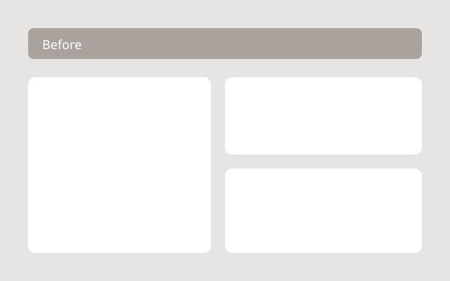
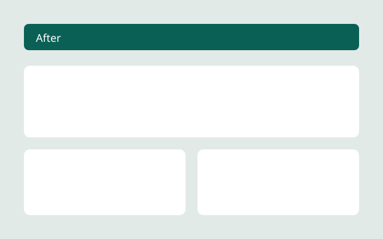
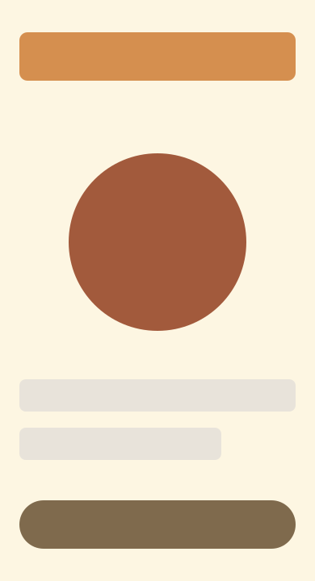

Design lab · foundation.css, read live from the repo
Every token, element and class a page can use, in whatever feel, layout and theme the Lab panel picks. Edit skills/instrument-page/lib/foundation.css, reload, and it shows here.
A page sets data-feel on <html>, and that swaps the token values below. Nothing else changes: every element reads these tokens, so a feel is entirely this table. Click a card to switch the page to it.
data-layout="column" is one reading column, for almost every page. wide is one wider column for a roster or a big table; its prose keeps a reading width on the same left edge, and it prints landscape. Everything sits in the column; .bleed and .full go wider only when a page asks.
the three tracks of the page grid, in this layout
semantic tokens a page may use: --name and its resolved value in this feel and theme
categorical, for people, teams, options: data-c="1"…"8"
tones: data-tone="good|warn|bad|accent|muted" sets --tone and --tone-wash on any element
the raw brand scales the tokens are built from (pages never use these directly)
Inter for text, Roboto Serif where a feel asks for it (editorial text and headings, and every blockquote), JetBrains Mono for code and, in urgent and ledger, labels.
Kicker · for whom, when, from what
hgroup > p:first-child, .kicker
h1
One short lede sentence that says why it matters.
hgroup > h1 + p, .lede
h2
h3
h4, .label
Body text runs at the base size with a line height of 1.55, which is where most of the reading happens.
p
Small print and muted notes.
small, .muted
41%a big number with its sentence
.stat
retryOnce() ⌘ K
code, kbd
inline: a, strong, mark, mark[data-tone], code
A paragraph with a link, strong words, a highlighted phrase, a bad one, and inline code.
blockquote (always the serif)
We kept the quote short and said who said it.
aside (tinted note; takes data-tone)
ul, ol
dl (term on the left, stacks on phones)
details (for an optional drill-in)
Two quotes, each with a per-seat price and a fixed fee, summed for 48 seats.
Hidden until opened.
button, .button, .primary, [aria-pressed], [data-c]
input, select, textarea
hr
.panel (paper, radius, shadow) and .panel[data-tone] / [data-c] (a muted background in that color)
Paper on the ground, with the feel's radius and shadow.
A muted background in its tone marks it.
One per person, team or option.
.inset (a tinted block, no shadow)
.inset
.inset data-tone="warn"
.inset data-c="6"
.stat, .stat[data-tone]
11%of requests failed
41 mincheckout was down
0orders lost
3,200teams on the new plan
.split (main plus a side column; stacks on phones), .split.flip
Main column
Side column, 19rem by default (--side)
.row, .row.between, .stack
.rail (cards in a row; a swipe strip on phones)
Drives Friday
Brings snacks
Books the room
Sends the recap
.cols (newspaper columns)
The first paragraph flows into columns at the wide track. It is useful for a long list of short things, such as a packing list or a glossary.
Each child avoids breaking across columns, so a paragraph stays whole.
A third paragraph to show the flow continuing.
.tag, .dot, .bar (--v)
ol.steps (each item's content in one span)
ol.flow (boxes joined by drawn arrows; they wrap to a new row and the line loops down; <code> for identifiers, data-tone on the one that matters)
checkout.tsbuilds the orderretryOncewaits on a 429a longer flow, wrapping onto a second row
page.mjsembeds and checksprobe.jsmeasures the layoutul.ticks (li[data-tone="bad"] draws a cross), ul.todo, ul.plain
table with thead, .n numbers, a toned row and a toned cell
| Plan | Per seat | Seats | Year one | Status |
|---|---|---|---|---|
| Starter | $12 | 20 | $2,880 | Current |
| Team | $18 | 20 | $4,320 | Picked |
| Business | $30 | 20 | $7,200 | Over budget |
table.cards (rows become cards under 40rem; each td has data-label) and caption
| Who | Shift | Role |
|---|---|---|
| Maya | Mon, Wed | Lead |
| Jon | Tue, Thu | Floor |
Code sits on one dark ground in both themes, so its colors are fixed in the stylesheet rather than tokens.
pre[data-file] > code.language-ts (Copy and Wrap come from foundation.js)
export async function retryOnce(call: () => Promise<Response>) {
const res = await call();
// A 429 means slow down: wait once, then try again.
if (res.status === 429) {
await sleep(Number(res.headers.get("retry-after") ?? 1) * 1000);
return call();
}
return res;
}code.language-diff
- const RETRIES = 5;
+ const RETRIES = 1;bare pre (terminal) with span[data-tone]
$ pnpm test ✓ client.test.ts (12) ✗ retry.test.ts (1 failed) expected 1 call, received 5
.frames (numbered contact sheet, --ratio), figure > figcaption



.pair (two or three at their own shapes)
inline SVG: [data-c] and [data-tone] fill; class outline | ink | muted | paper | wash | line | faint
button[data-show-who] dims everything not marked data-who
button[data-copy="#id"]
Hi! Could you add the ride home to the quote? Thanks.
[data-date] outlines today (set to today by the lab so you can see it)